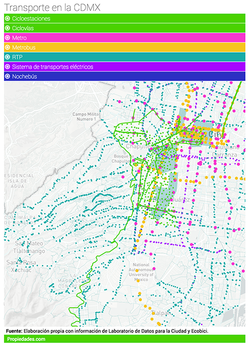
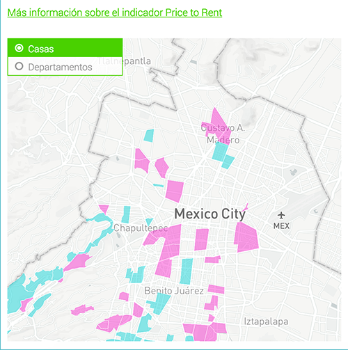
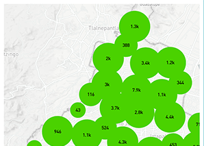
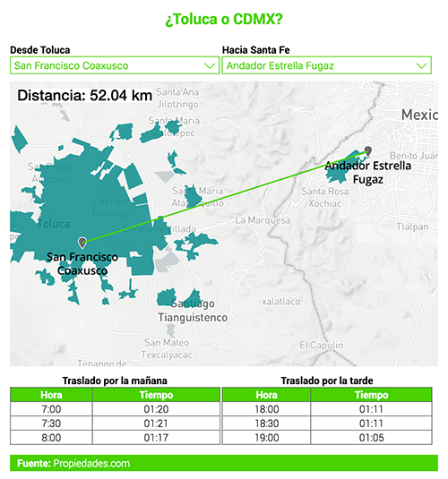
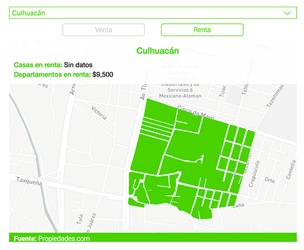

Actualmente trabajo en el blog del portal Propiedades.com junto a un equipo multidisciplinario que ayuda a los usuarios a tomar decisiones informadas a través de artículos basados en datos sobre la industria inmobiliaria. Ahí realizo visualizaciones de datos como infografías, mapas, gráficas, etc. para facilitar la comprensión de los datos en los que se basan estos artículos.
Mi formación y experiencia laboral me permiten realizar tanto el diseño como la implementación. Estos son algunos proyectos en los que he colaborado:
-

Las 10 colonias más pet-friendly de la CDMX
Propiedades.com/Blog
Mapbox Studio -

10 colonias para "librar" el gasolinazo
Propiedades.com/Blog
Mapbox + JS -

¿Me conviene comprar o rentar?
Propiedades.com/Blog
Mapbox + JS -

¿Eres foodie? Múdate a estas colonias
Propiedades.com/Blog
Mapbox JS -

Si trabajas en Santa Fe, ¿te conviene vivir en Toluca?
Propiedades.com/Blog
Mapbox + JS -

¿Cuánto cuesta vivir en un Barrio Mágico?
Propiedades.com/Blog
Mapbox + JS